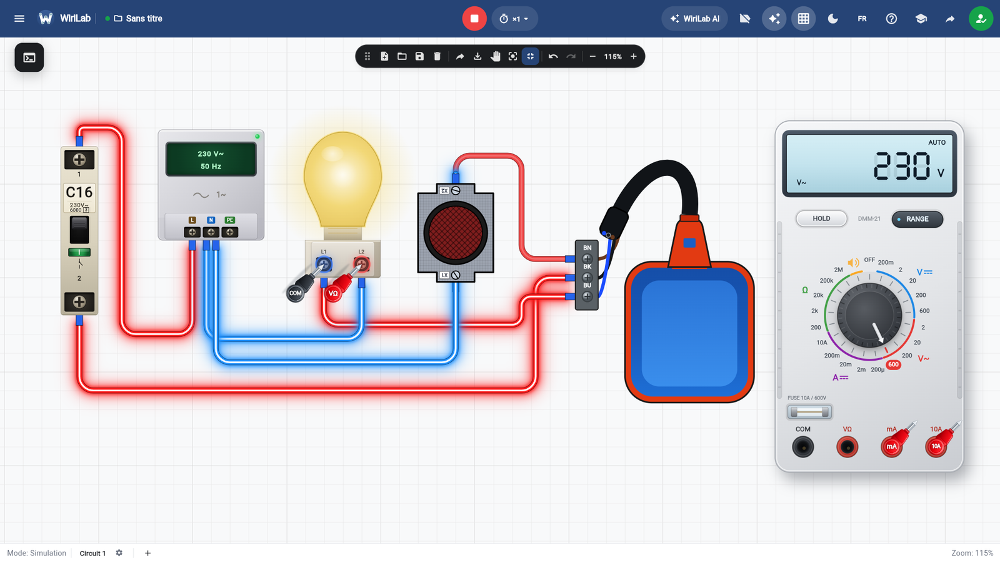

Domestique · Câblage
Câbler un va-et-vient : deux interrupteurs, une lampe
Le va-et-vient permet d’allumer ou d’éteindre la même lampe depuis deux endroits (escalier, couloir, chambre). Sur le plan, on voit souvent deux interrupteurs et des fils « voyageurs ». En atelier, l’erreur classique est d’inverser une navette ou de confondre le commun avec une borne de lampe.

1. Rôle de chaque interrupteur
Un interrupteur va-et-vient possède en général trois bornes (L, 1, 2) et un mécanisme interne qui inverse le chemin entre 1 et 2. Le premier interrupteur reçoit la phase sur L ; le second renvoie vers la lampe. Entre les deux passent deux conducteurs voyageurs (souvent de même couleur dans le TP, repérés sur le schéma).
2. Ordre de lecture du schéma
- Source : disjoncteur ou point de départ phase / neutre.
- Phase vers L du premier interrupteur.
- Deux fils entre 1–1 et 2–2 des deux interrupteurs (pas toujours dans cet ordre visuel : suivez les numéros du schéma).
- Sortie du second interrupteur vers la borne phase de la lampe ; neutre direct au point lumineux.
3. Vérifications avant mise sous tension
- Aucun fil voyageur ne doit être sur le neutre de la lampe à la place de la phase commandée.
- Les serrages sont faits ; pas de fil nu visible hors bornes.
- Les deux interrupteurs sont bien du type va-et-vient (pas un simple allumage sur l’un des deux).
4. Test fonctionnel
Sous tension : la lampe doit pouvoir s’allumer et s’éteindre depuis chaque interrupteur, quelle que soit la position de l’autre. Si un seul poste commande, une navette est mal câblée ou un voyageur est sur la mauvaise borne.
5. S’entraîner sans risque
Dans un simulateur, vous pouvez refaire le câblage plusieurs fois, mesurer 230 V aux bons endroits et observer les lampes sans ouvrir un vrai boîtier. Une fois la logique comprise, le geste sur chantier devient plus rapide.
À retenir : phase → L du 1er ; deux voyageurs ; sortie du 2e → lampe ; neutre continu.